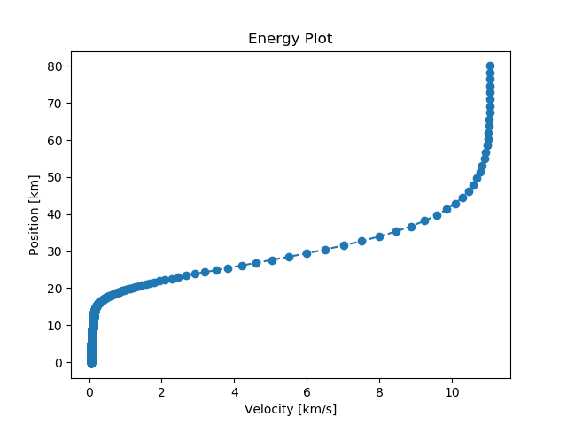

RK4 Solution for a Hypersonics Initial Value Problem¶
In this mini-project an initial value problem (IVP) from hypersonics domain is integrated using the RK4 method. The equations of motion (EOMs) for a ballistic hypersonic vehicle reentering the Earth used in this IVP are as follows.
where \(h\) is the altitude, \(v\) is the velocity, \(\gamma\) is the flight path angle, \(\rho_{0}\) is the surface atmospheric density, \(H\) is the scale height, \(re\) is the radius of Earth, \(B\) is the ballistic coefficient of the hypersonic vehicle and \(g\) is the acceleration due to Earth’s gravity.
The initial conditions for this IVP are as follows.
The values of the constants used in this IVP are as follows.
The EOMs are integrated from an initial time of 0 s to a terminal time of 212.2 s using the following RK4 method with 1000 steps.
where \(h\) is the step size, \(t(i)\) is the time at the nth step, \(w(:,i)\) is the state vector at the nth step, eom is the function that calculates the state vector derivatives, \(k_{1}\), \(k_{2}\), \(k_{3}\), and \(k_{4}\) are the vectors used in the RK4 method.
The resulting energy plot for this IVP using RK4 method is shown below.
{kind=link}